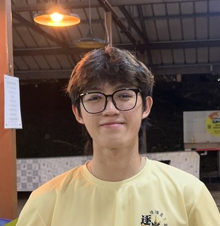

INFORMATION SYSTEMS PLANNING
THE THREE-STEP ISP PROCESS.

Information systems planning assesses information needs and defines the systems, databases & technologies that best meet them.
Where FSKTM navigation stands today.
What FSKTMap will deliver.
The schedule, roles and budget.
Static floor plans & physical signage confuse new students & visitors.
MM5
Obscure location
BK1
Unclear room labelling
OKU
Missing accessibility infrastructure
Target user profiles
Functional requirements
FSKTMap moves the faculty from static floor plans to interactive, accessible navigation.
Multi-floor 3D layouts showing landmarks, offices & rooms across faculty blocks.
Personalized point-to-point navigation, with accessible routing for OKU users.
Dynamic ETA and clear visual pathfinding, on mobile & web.
Four phases across Weeks 5–9, with iterative sprints during execution.
Yong Jun Onn
Ng Jing Xun
Looi Yu Zhi
Tai Yun Yi
Low Guan Hoong
FSKTMap runs almost entirely on free-tier tools and hosting.
RM 10
Everything else runs on free tiers.